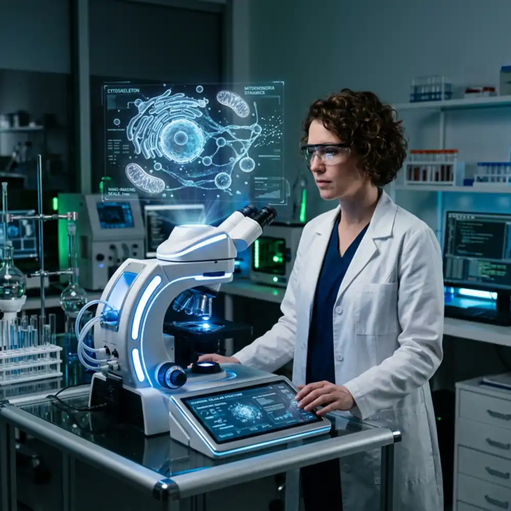

Combining stem cell therapies, synthetic neuro-scaffolding, and targeted proteomics to repair spinal cord injuries and reverse neurodegenerative diseases.
Tackling central nervous system repair from multiple biological angles.
Using CRISPR to direct patient-derived iPSCs into specialized neuronal sub-types for precise brain grafting.
3D-printed hydrogel matrices that guide axon growth across spinal cord lesions.
Deploying stem-cell derived exosomes to cross the blood-brain barrier and quiet neuro-inflammation.
Novel monoclonal antibodies that clear amyloid plaques while preventing tau-protein tangling.
Targeted ultrasound combined with gene therapy to re-awaken dormant neural circuits post-stroke.
Gene therapies designed to regenerate retinal ganglion cells and restore vision in glaucoma patients.

Our flagship spinal cord injury (SCI) programme employs a proprietary 3D-printed bio-scaffold seeded with neural stem cells. In Phase I/IIa, 60% of patients with complete chronic thoracic injuries regained measurable voluntary motor control.